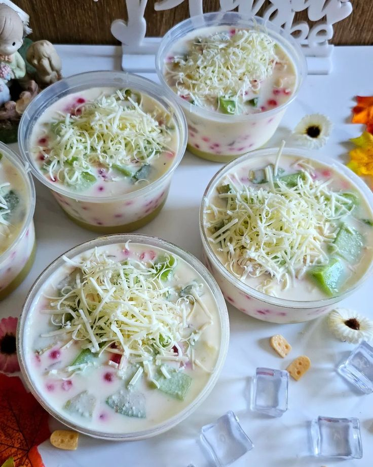

Welcome to Likesalad.Jelly
Fresh, flavorful, and fun – discover the magic of our Likesalad.Jelly!

Terbuat dari susu Fresh
kesegaran alami susu memberikan cita rasa yang kaya dan menutrisi di setiap gigitan

Menggunakan Yogurt
Tidak hanya enak, salad jelly kami juga sehat karena menggunakan yogurt

Jelly yang super lembut
Jelly yang super lembut menghadirkan sensasi lezat dan segar yang tak terlupakan